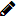

Modifie le mot de passe saisi lors du démarrage de cotodesign Template et cotodesign Order Viewer.
Afin d’améliorer la sécurité, pensez à changer régulièrement le mot de passe.
Liste de Template et Liste de Print Layout |
Ce sont les listes des « Template » et des « Print Layout » enregistrés dans cotodesign.
Boutons dans le coin en haut à droite de l’écran

Modifie le mot de passe saisi lors du démarrage de cotodesign Template et cotodesign Order Viewer.
Afin d’améliorer la sécurité, pensez à changer régulièrement le mot de passe.

Affiche le fichier d’aide en ligne.
LANGUE

Modifie la langue d’affichage.
Liste de Template

Crée un nouveau modèle.
• Point associé >> Déterminer la taille et la méthode d’impression d’un modèle

Modifie le modèle.

Importe un fichier SVG et ajoute un nouveau modèle.
Pour les spécifications du fichier SVG, voir le « Guide d’Installation cotodesign ».
Affiche l’aperçu du modèle.
Les paramètres ne peuvent pas être modifiés.

Supprime le modèle.

Importe un fichier de modèle et le télécharge sur le serveur.

Sauvegarde le modèle sélectionné.

Saisissez une partie du nom d’un modèle pour filtrer les fichiers de modèles qui sont affichés dans la liste des modèles.
NOM
Affiche le nom de fichier du modèle enregistré.
Les noms de fichiers de modèles sont sujets à des règles de dénomination et indiquent une configuration de calque séparé par un point.
TYPE D’IMPRESSION
Lors de l’impression sur une imprimante, sélectionnez « Impression couleur ». Lors de l’utilisation d’une machine de marquage laser sur films, sélectionnez « Impression sur film ». Lors de l’utilisation d’une imprimante métal, sélectionnez « Impression métallique ». Lors de l’utilisation d’une machine de découpe, sélectionnez « Coupe ».
Cliquez sur « ▼ » et sélectionnez « TYPE D’IMPRESSION » pour filtrer les fichiers de modèles qui sont affichés dans la liste des modèles.
EFFET SPÉCIAL
Lorsque « COUL. DE PT. » est utilisé pour créer un fichier de modèle, une icône correspondant à l’effet spécial s’affiche.
Liste de Print Layout

Crée un nouveau gabarit.
Modifie les paramètres du gabarit.

Importe un fichier SVG et ajoute un nouveau gabarit.
Pour les spécifications du fichier SVG, voir le « Guide d’Installation cotodesign ».
Affiche l’aperçu du gabarit.
Les paramètres ne peuvent pas être modifiés.

Supprime le gabarit.

Importe un fichier de gabarit et le télécharge sur le serveur.

Sauvegarde le gabarit sélectionné.
CONNECTER
Sélectionne le gabarit dans lequel placer le modèle.
Chaque modèle a besoin d’au moins un gabarit de destination pour son placement. Les modèles qui n’ont pas été placés dans un gabarit ne peuvent pas être imprimés.
Il est possible de sélectionner plusieurs gabarits de destination pour le placement d’un seul modèle. Toutefois, les modèles et les gabarits ne peuvent être combinés que s’ils ont le même type d’impression. Par exemple, les modèles destinés à l’impression couleur ne peuvent être associés qu’à des gabarits destinés à l’impression sur film. Utilisez cotodesign Print Manager pour régler quels gabarits où placer un modèle commandé.
DÉFAUT
Sélectionne le gabarit dans lequel les modèles sont placés automatiquement lorsque la case [Sélection auto de la disposition] est cochée dans cotodesign Print Manager.
NOM
Affiche le nom de fichier du gabarit.
TYPE D’IMPRESSION
Lors de l’impression sur une imprimante, sélectionnez « Impression couleur ». Lors de l’utilisation d’une machine de marquage laser sur films, sélectionnez « Impression sur film ». Lors de l’utilisation d’une imprimante métal, sélectionnez « Impression métallique ». Lors de l’utilisation d’une machine de découpe, sélectionnez « Coupe ».
Cliquez sur « ▼ » et sélectionnez « TYPE D’IMPRESSION » pour filtrer les fichiers qui sont affichés dans la liste des gabarits.
SAUVEGARDER
Sauvegarde les paramètres de la destination de placement du modèle et du gabarit.
Copyright (C) 2018-2019 Roland DG Corporation